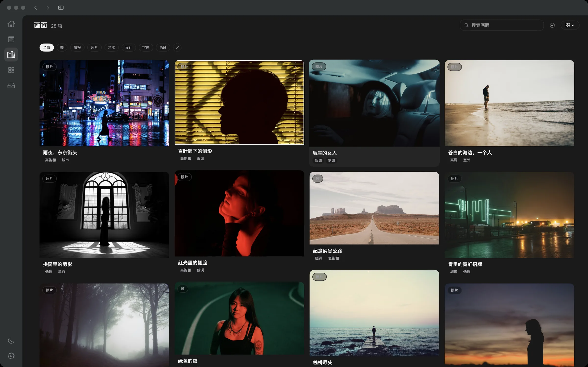
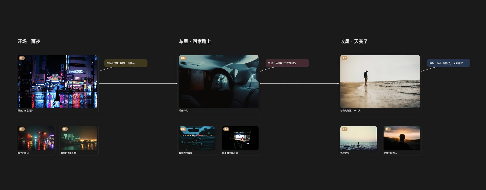
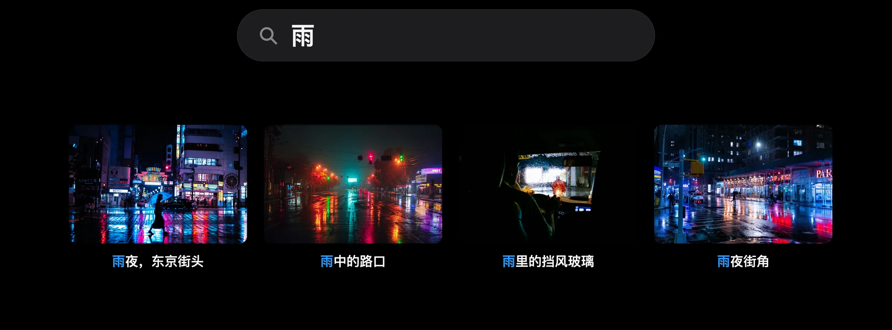
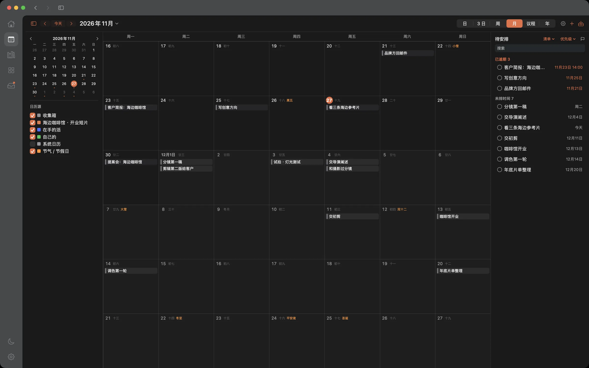
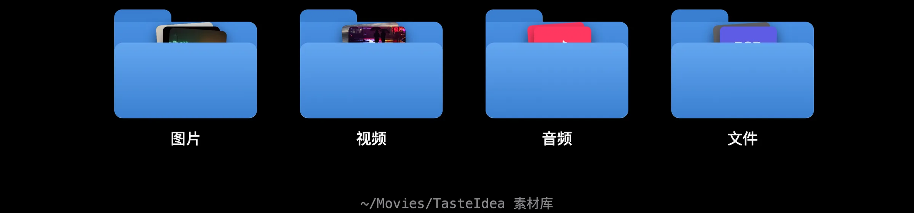

TasteIdea
收好每一个灵感。
给导演和创作者的 Mac 工作台：把打动你的画面收下来，铺在一块画布上，用自己的话找回，再排进日子里。
看到就收。
拖进来、粘贴进来，原件替你存好。图片、视频、音频、链接、一句话，都放进同一个资料库。

铺开，连起来。
参考、想法、分镜，摊在同一块无限画布上，拉一条线就把它们连在一起。

用你自己的话，找回它。
记不清名字也没关系。打一个「雨」，下雨的那几张就都回来了。

把灵感，排进日子里。
拍摄、交片、开会，一页日历看清。快速添加时打「明天下午三点」，日期就自己填好了。

原件，一直都在。
拖进来的东西都存一份原件，按图片、视频、音频、文件分好放在「影片」文件夹里。原文件挪走、删掉，也不影响。

现在就开始收。
免费下载 Mac 版
第一次打开：在「应用程序」里对 TasteIdea 点右键，选「打开」，再点一次「打开」（内测包没有经过苹果公证）。